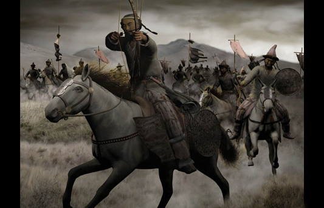
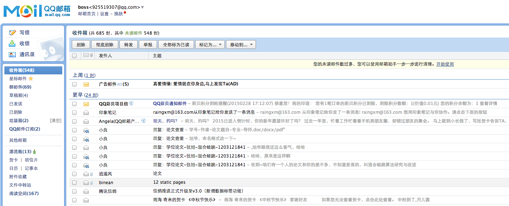
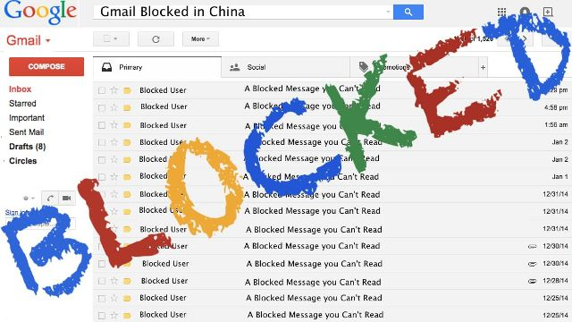
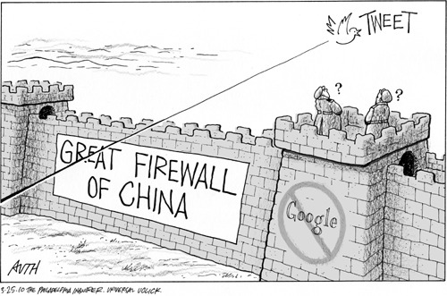

GFW
Great Fire Wall
The Great Wall

Do you know its main function?
Defend enemy
Great Wall has the ability to protect us.
What's GFW

Google is dangerous right? GFW want to protected us.
Not just google, we lost more


We lost many things
Bring them back


Block and Copy
China is strange

On one hand they want to embrace the world, on the other hand they block the Internet.
Why we have GFW
Outside world is dangerous, want protected us?
Or some political reason, goverment want to control the server and data in beijing.
Most ordinary people's standpoint
Full of news damage our goverment image.
Criticism about socialism, and praise about capitalism.
Even some computer science students, hold the same point.
Most of them, never get outside world.
As a developer, I lost a good search engine.
picture(I need one baidu search)
Use baidu as your main search engine, it's a challenge of your patient
Compair whith baidu search
As a developer, I lost a good email service.
Poor email support. what's 925519307@qq.com.
Compair with qq email
We need a scientific way to surf Internet.

we like the mouse.
We struggle hardly outside
- Free Gate
- Change hosts file
- VPN (Most Widely Used)
yunti vpn
A Chinese Company work on it, let us surf Internet easily.
Move to P3 (Social Justice)
Does goverment have the power to do this?
- Most media are goverment's media.
- Bourgeois family just aware of their rights. We need time to get our rights.
- We need struggle to connect outside world. It's our rights.
Technique is neutral
github gfw image
Technique do good things
Technique also do bad things, even the results is not that bad. (we have our own baidu, renren which bring many job opportunity to IT students.)
Another GFW in China
Lack of Social Ladder
Two Wall Chinese people face
- The connection to the world.
- The connection between goverment and oridnary citizens.